디자인 시트 — 전쟁사(war_history)
1. 견본 컷
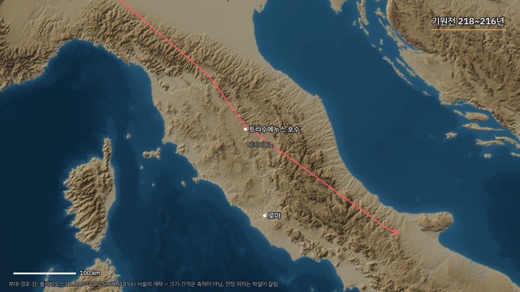
cannae_sketch t=8s · relief ·
sketch.war.default_theme · hud.date_badge.era_format.period_years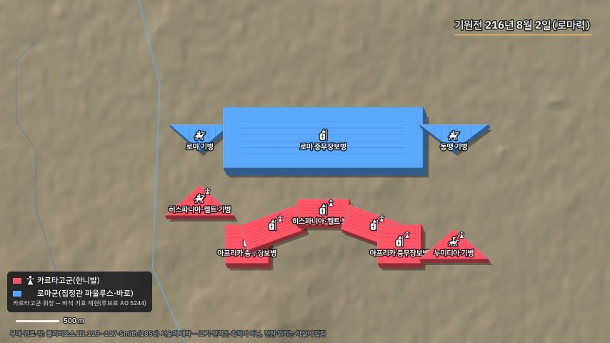
cannae_sketch t=30s · relief ·
war_history.symbol_sets.ancient.shapes · war_history.symbol_sets.depth.side_ratio · war_history.symbol_sets.glyph.size_px · war_history.faction_badge.emblem.legend_px · hud.date_badge.era_format.roman_suffix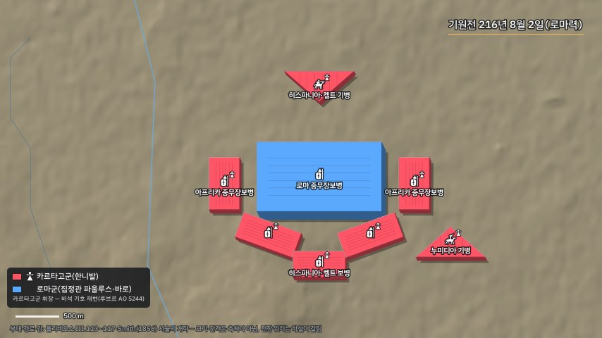
cannae_sketch t=36.5s · relief ·
sketch.war.default_theme · war_history.symbol_sets.rank_grid.gap_px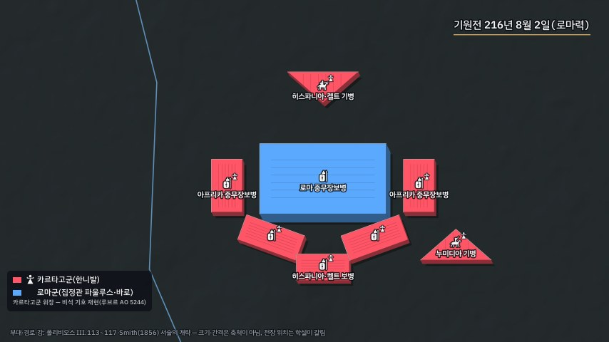
cannae_sketch t=36.5s · dark ·
sketch.war.default_theme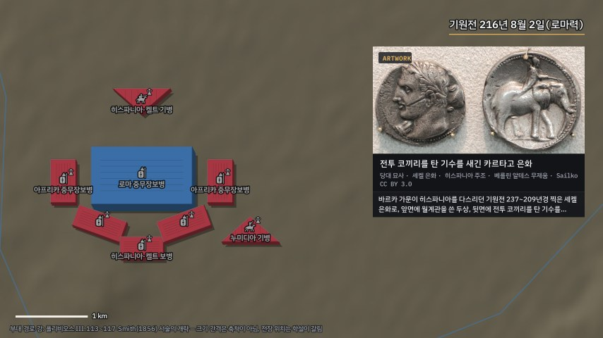
cannae_sketch t=42s · relief ·
war_history.period_art.labels.contemporary · war_history.evidence.required_layers.ancient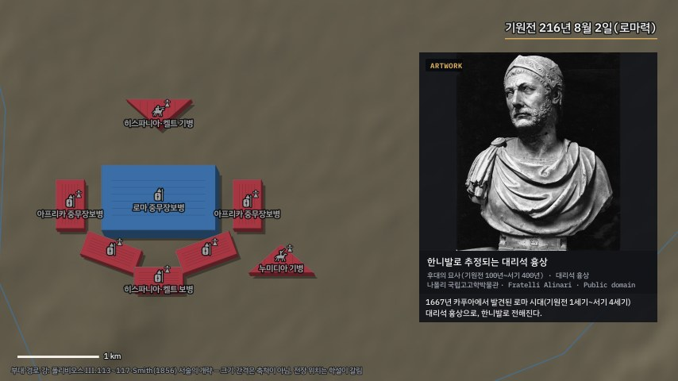
cannae_sketch t=48s · relief ·
war_history.period_art.labels.later · war_history.period_art.contemporary_gap_years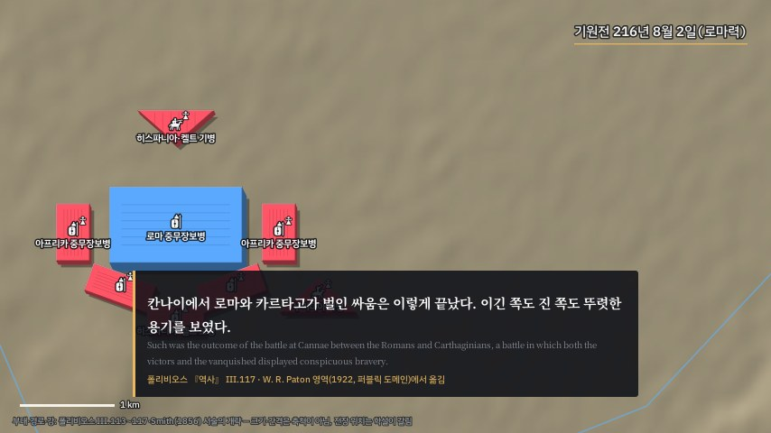
cannae_sketch t=66s · relief ·
war_history.evidence.required_layers.ancient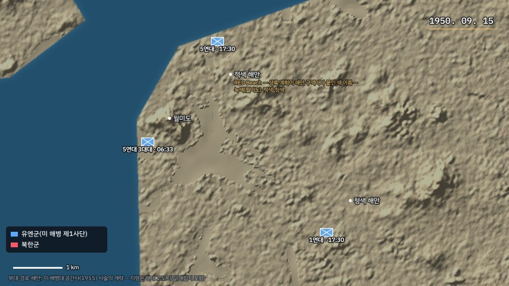
inchon_sketch t=30s · relief ·
war_history.symbol_sets.modern.shapes · war_history.symbol_set_by_year.early_modern_max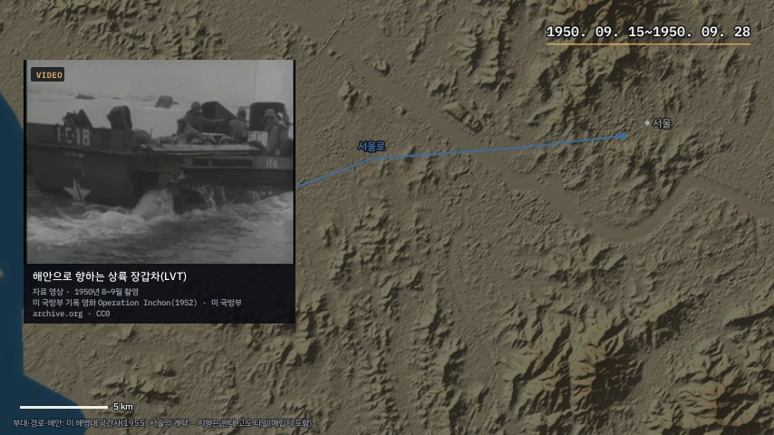
inchon_sketch t=45s · relief ·
war_history.evidence.required_layers.modern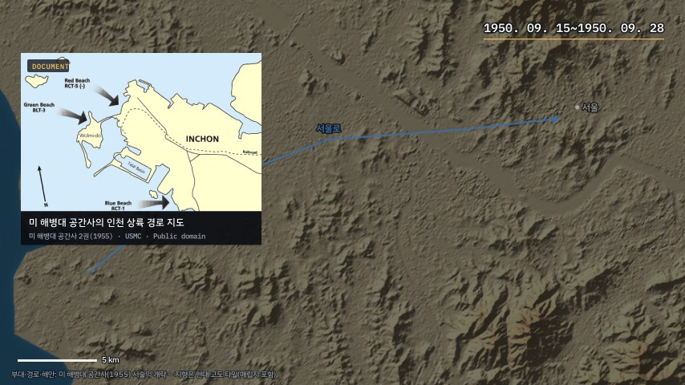
inchon_sketch t=63s · relief ·
war_history.evidence.required_layers.modern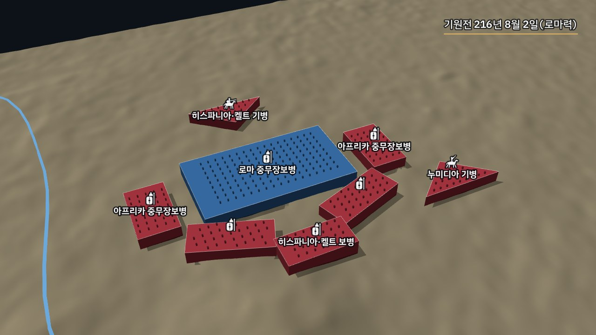
sketch.war.terrain3d.* · 무대 등록 전(stages_planned)2. 병종 픽토그램
3. 진영 휘장(재현)
| 키 | 진영 | 근거 유물 | 근거 사진 | 화면 라벨 |
|---|---|---|---|---|
carthage_tanit | 카르타고 | 타니트 기호를 새긴 석회암 비석(루브르 박물관 AO 5244, 기원전 3세기) — 원반·가로 막대·삼각형 몸의 기호를 기하로 다시 그림 | File:Stèle avec le signe de Tanit (Louvre, AO 5244).jpg — Tangopaso(사진, PD-self), Public domain | 비석 기호 재현(루브르 AO 5244) |
4. 날짜 표기(EraDate)
| 원고 날짜 | 화면 뱃지 |
|---|---|
-216.08.02R | 기원전 216년 8월 2일(로마력) |
-216 | 기원전 216년 |
-218~-216 | 기원전 218~216년 |
c.-250 | 기원전 3세기경 |
1950.09.15 | 1950. 09. 15 |
1950.09 | 1950. 09 |
5. 규칙 값
| 묶음 | 규칙 키 | 값 |
|---|---|---|
| 부호 세트 | war_history.symbol_sets.ancient.units | ["heavy_inf", "light_inf", "heavy_cav", "light_cav", "skirmisher", "elephant"] |
| 부호 세트 | war_history.symbol_sets.ancient.shapes | {"heavy_inf": "block", "light_inf": "block", "heavy_cav": "wedge", "light_cav": "wedge", "skirmisher": "dots", "elephant": "big_dots"} |
| 부호 세트 | war_history.symbol_sets.ancient.glyphs | {"heavy_inf": "heavy_inf", "light_inf": "light_inf", "heavy_cav": "heavy_cav", "light_cav": "light_cav", "skirmisher": "skirmisher", "elephant": "elephant"} |
| 부호 세트 | war_history.symbol_sets.early_modern.units | ["regiment_block", "artillery_triangle", "cavalry_wedge"] |
| 부호 세트 | war_history.symbol_sets.early_modern.shapes | {"regiment_block": "block", "artillery_triangle": "triangle", "cavalry_wedge": "wedge"} |
| 부호 세트 | war_history.symbol_sets.modern.units | ["app6_inf", "app6_arm", "app6_cav"] |
| 부호 세트 | war_history.symbol_sets.modern.shapes | {"app6_inf": "app6", "app6_arm": "app6", "app6_cav": "app6"} |
| 부호 세트 | war_history.symbol_set_by_year.ancient_max | 1500 |
| 부호 세트 | war_history.symbol_set_by_year.early_modern_max | 1850 |
| 입체 | war_history.symbol_sets.depth.side_ratio | 0.12 |
| 입체 | war_history.symbol_sets.depth.side_dark | 0.55 |
| 입체 | war_history.symbol_sets.depth.shadow_alpha | 0.35 |
| 입체 | war_history.symbol_sets.depth.shadow_px | [3.0, 3.0] |
| 입체 | war_history.symbol_sets.depth.rim_alpha | 0.5 |
| 입체 | war_history.symbol_sets.rank_grid.shapes | ["block", "wedge"] |
| 입체 | war_history.symbol_sets.rank_grid.gap_px | 3.2 |
| 픽토그램 | war_history.symbol_sets.glyph.size_px | 15.0 |
| 픽토그램 | war_history.symbol_sets.glyph.halo_px | 1.4 |
| 픽토그램 | war_history.symbol_sets.glyph.alpha | 0.95 |
| 휘장 | war_history.faction_badge.emblem.legend_px | 13.0 |
| 휘장 | war_history.faction_badge.emblem.block_px | 9.0 |
| 휘장 | war_history.faction_badge.emblem.alpha | 0.95 |
| 휘장 | war_history.faction_badge.emblem.badge_frac | 1.3 |
| 휘장 | war_history.faction_badge.emblem.badge_ink | [0.13, 0.12, 0.11] |
| 날짜 표기 | hud.date_badge.era_format.bce_prefix | 기원전 |
| 날짜 표기 | hud.date_badge.era_format.day | {y}년 {m}월 {d}일 |
| 날짜 표기 | hud.date_badge.era_format.circa | {c}세기경 |
| 날짜 표기 | hud.date_badge.era_format.period_years | {y0}~{y1}년 |
| 날짜 표기 | hud.date_badge.era_format.roman_suffix | (로마력) |
| 증거 층 | war_history.evidence.required_layers.ancient | ["period_art", "site", "toponymy"] |
| 증거 층 | war_history.evidence.required_layers.early_modern | ["period_art", "site|document", "toponymy"] |
| 증거 층 | war_history.evidence.required_layers.modern | ["photo|clip", "document", "toponymy"] |
| 증거 층 | war_history.period_art.contemporary_gap_years | 150 |
| 증거 층 | war_history.period_art.labels.contemporary | 당대 묘사 |
| 증거 층 | war_history.period_art.labels.later | 후대의 묘사({created}) |
| 증거 층 | war_history.evidence.toponymy_confidence | ["통설", "이설", "미상"] |
| 사상자 | war_history.casualty.band_required | true |
| 사상자 | war_history.casualty.band_labels.ancient_range | 사료마다 다르다 — {low_label} {low}~{high_label} {high} |
| 사상자 | war_history.casualty.band_labels.modern_estimate | 현대 추정 {low}~{high} |
| 권리 | war_history.rights.allowed_licenses | ["Public domain", "Public Domain Mark", "PD-Art", "United States Government Work", "CC0", "CC BY 2.0", "CC BY 2.5", "CC BY 3.0", "CC BY 4.0"] |
| 권리 | war_history.rights.disallowed_tags | ["CC-BY-SA", "GFDL", "CC-BY-NC", "CC-BY-ND"] |
| 지도 테마 | sketch.war.default_theme | relief |
| 지도 테마 | geo.themes.relief.map.label_contrast_fix | {"halo": 6.0, "halo_a": 1.0} |
| terrain3d | sketch.war.terrain3d.exaggeration | 4.0 |
| terrain3d | sketch.war.terrain3d.camera.elev_deg | 40.0 |
| terrain3d | sketch.war.terrain3d.camera.radius_factor | 1.6 |
| terrain3d | sketch.war.terrain3d.camera.period_sec | 60.0 |
6. 반례 — 검증기가 막는 것
| 틀린 입력 | 오류 |
|---|---|
| 부호 세트에 없는 픽토그램 | 모델: Value error, marker glyph 'musketeer' 는 rules war_history.symbol_sets 픽토그램 ['elephant', 'heavy_cav', 'heavy_inf', 'light_cav', 'light_inf', 'skirmisher'] 밖이다 |
| 픽토그램과 폭발 아이콘을 함께 | 모델: Value error, marker glyph 는 icon dot(기본) 자리에 그린다 — icon boom 과 함께 쓰지 않는다 |
| 범위 띠 종류 없음 | kind: Field required |
| 범위 띠 low > high | 모델: Value error, 추정 범위 low 9.0 > high 2.0 |
| 로마력 표지를 연도만 있는 날짜에 | 로마력 표시(R)는 일까지 적은 날짜에만: '-216'R |